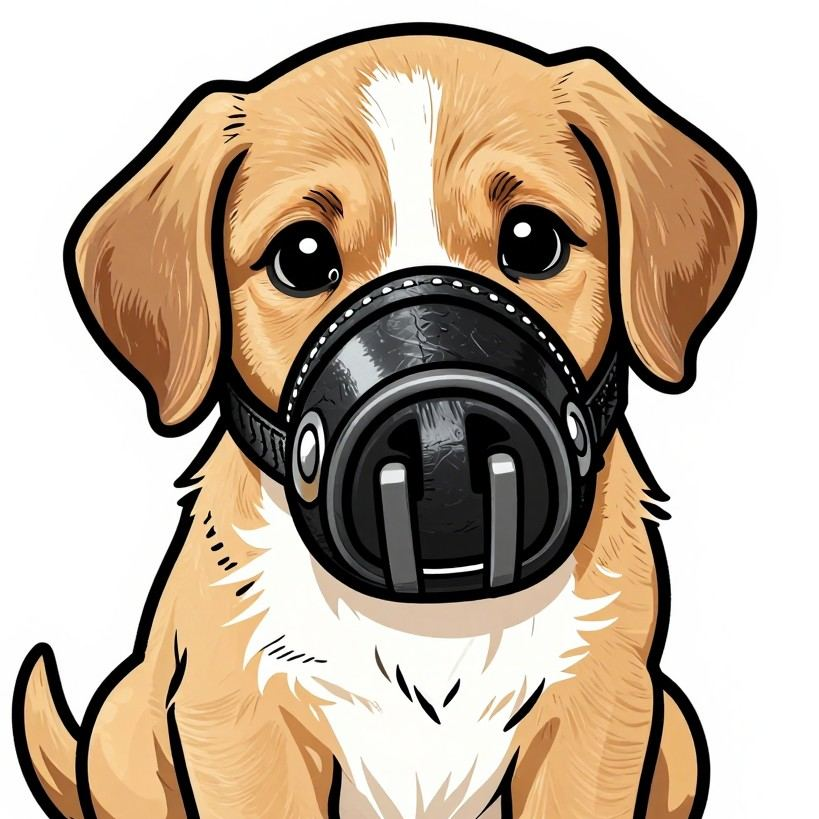
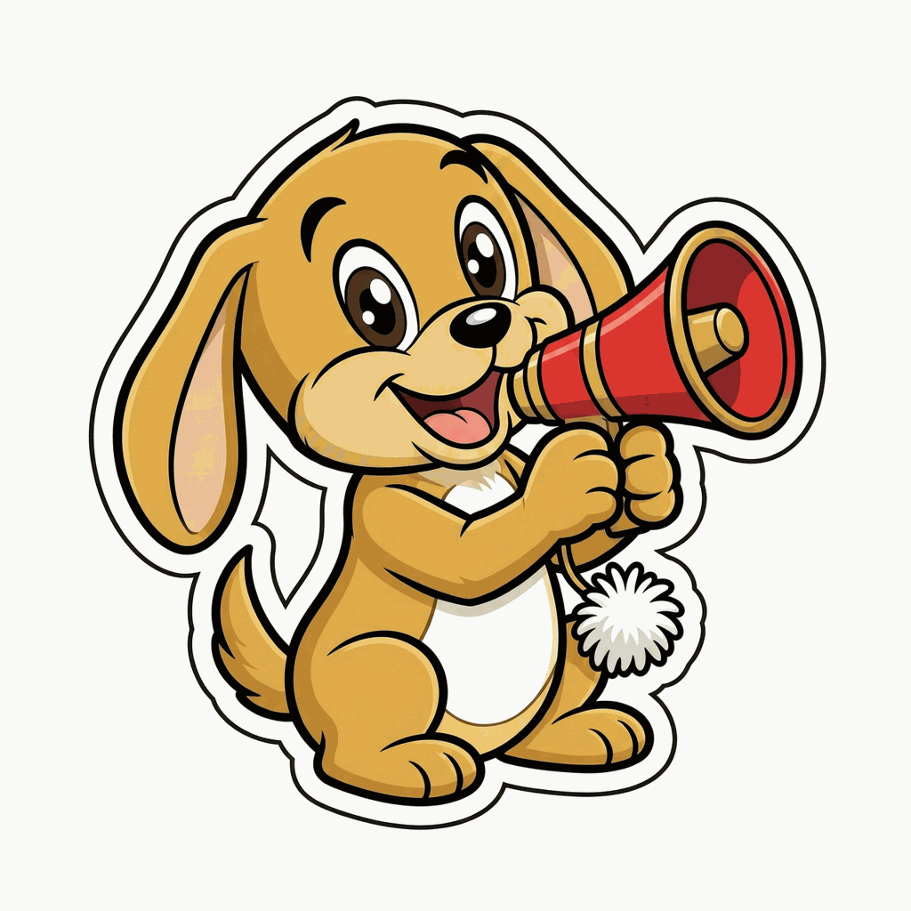

MY VIEW
a blank paper · your wires · one button
options
the paper's options
the sky — which readings show
the horoscope — each sign on or off

Don't give me those eyes. You did this.Type a word. Anything carrying it goes — title or body, no cleverness. It over-blocks on purpose: better to lose an innocent story than print a guilty one.

Louder. The ones you always want up front.Type a word. Anything carrying it — title or body — runs at the top of the center, picture or not. The muzzle's opposite number, same rules, no cleverness.
the paper is blank on purpose.
arm your wires above, then press FILL.
arm your wires above, then press FILL.